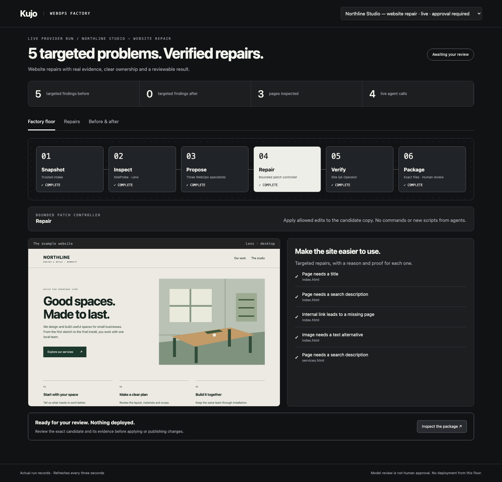

Turn Supported Static-Site Findings into Reviewable Repair Candidates
Explore the project ↗
WebOps Factory’s repository describes a workflow that copies a static website, identifies supported findings, requests focused repairs, applies allowed edits to the copy and checks the result again. An independent model reviewer examines the exact patch, while the original site remains unchanged.
Reviewers can inspect retained evidence including handoffs, proposed repair values, reasons, screenshots, verification reports, before-and-after findings and the exact diff. This evidence supports review; it does not prove correctness or release readiness.
The current release supports missing or empty titles, missing or empty search descriptions, images without alt attributes and broken internal file links. It accepts bounded static exports, not framework projects or server applications. Its checks do not establish perfect SEO, accessibility conformance or security certification, and browser checks are limited to the homepage at desktop and mobile sizes. Human review and deployment remain separate.
Open the repository README for complete, current prerequisites, setup instructions and review guidance: https://github.com/kujolang/webops-factory